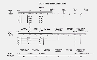
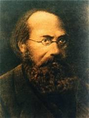
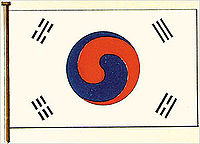
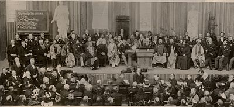

1920,
1935,
1941,
1942,
1943,
1944,
1945,
1946,
1947,
1948
1949,
1950,
1951,
1952,
1953,
1954,
1955,
1956,
1957,
1958
1959,
1960,
1961,
1962,
1963,
1964,
1965,
1966,
1967,
1968
1969,
1970,
1971,
1972,
1973,
1974,
1975,
1976,
1977,
1978
1979,
1980,
1981,
1982,
1983,
1984,
1985,
1986,
1987,
1988
1989,
1990,
1991,
1992,
1993,
1994,
1995,
1996,
1997,
1998
1999,
2000,
2001,
2002,
2003,
2004,
2005,
2006,
2007,
2008
2009,
2010,
2011,
2012,
2013,
2014,
2015,
2016,
2017,
2018
2019,
2020,
2021,
2022,
2023,
2024,
2025,
2026,
2027
S.F. betyder Sanna Föräldrar,
dvs. Sun Myung Moon och hans Heliga hustru Hak Ja Han Moon.
Sun Myung Moon skrivs som "Han" i denna historiska text (efter eng.
originaltexten; "Han" = Sun Myung Moon SMM)
Välsignelsen = förlåtelse av ursprunglig synd till äktenskaps-par inom Enighetsrörelsen.
Utförd av paret Moon - Sanna föräldrar.
Detaljerad skildring av Hans liv!
är 33 e.Kr återkomsten av Kristus/Messias
startade när Jesus uttalade orden och löftet:
"Min Fader, om denna kalk inte kan tas ifrån mig, utan jag måste dricka den, så ske din vilja." Matt 26:42
"Människosonen skall komma i sin Faders härlighet med sina änglar, och då skall han löna var och en efter
hans gärningar." Matt 16:27
Ca. 90 e.Kr.
Upp 12:5 Och hon födde ett barn, en Son (ny Adam), som ska styra alla folk med järnspira
Kommentar: ...styra alla folk med järnspira...
citat SMM; även horisontellt finns inget som jag inte har berört. Kampen är över. Det finns ingen som kommer att
motsätta sig Enighetskyrkan från och med nu. Jag har rensat bort all opposition, från den individuella nivån, genom
familjen, stammen, nationell och global nivå, upp till kosmisk nivå av motstånd. Mitt i allt detta kan en person som
kallar på vär himmelske fader och sanna föräldrar, som bestämmer sig för att gå utöver livet om det behövs, bli
någon som inte har något samband med djävulens och dödens värld.
I den hör vertikala positionen har jag kommit till den fysiska världen som Guds företrädare i himlen och skickat
stamMessias ut på denna jord horisontellt vid denna tidpunkt. även om jag där nu, kommer stamMessias oundvikligen
att ympas till den hör domänen som är förberedd i världen och förbinder genom denna järnstav till den vertikala
världen. /SMM april 1990
Upp 2:17 Du som har öron, hör vad Anden säger till församlingarna! Den som segrar ska jag ge av det dolda mannat.
Och jag ska ge honom en vit sten, och på stenen är skrivet ett nytt namn (Sun Myung Moon!) som ingen
känner utom den som för det.
Matt. 21:43 Liknelsen om vingårdsmännen
Därför säger jag er: Guds rike ska tas ifrån er och ges åt ett folk som bör dess frukt. (Korea)
Ryttaren på den vita hösten
Upp. 19:11 Och jag såg himlen öppen, och se: en vit häst, och han som satt på den heter Trofast och Sann, och han
dömer och strider i rättfärdighet. 12 Hans ögon var som eldslågor, och på sitt huvud bar han många kronor. Han
hade ett namn skrivet som ingen känner utom han själv (Sun Myung Moon), 13 och han var klädd i en
mantel som var doppad i blod, och hans namn är Guds Ord. 14 De himmelska hörarna följde honom på vita hästar, och de
var klädda i vitt rent linne. 15 Ur hans mun kom ett skarpt svärd som han ska slå folken med, och han ska styra dem
med järnspira, och han trampar Guds, den Allsmäktiges, stränga vredes vinpress. 16 Och på sin mantel och på sin höft
har han ett namn skrivet: "Konungars Konung och herrarnas Herre."
Upp 12:4 Och draken stod framför kvinnan som skulle föda (ny Adam), för att sluka hennes barn
så snart hon hade fått det.
(döda/krossa Messias och hans heliga mission)
 2000 är av kristen historia ==> återkomsten av Kristus/Messias!
1555 Nostradamus 1503-1566 fransk läkare och profet-Les Propheties
"För så som blixten flammar över himlen från öster till väster,
så ska det vara när Människosonen återvänder..." Matt. 24:27
Inte långt från det stora årtusendets tidsålder,
När de döda skall stiga upp ur sina gravar.
Länge efterlängtad skall han aldrig återvända i Europa.
Han skall komma i Asien;
En av förbundet utgivet av den store Hermes,
Han skall växa över alla andra makter i Orienten. /Nostradamus
1758 Swedenborg publicerar Himmel och Helvete - ny detaljerad kunskap om andliga världen.
1819 till hennes död 1824,
kommunicerar Anne Catherine Emmerich, en tysk kristen mystiker, med Jesus och den andliga världen.
1840 Jakob Lorber,
kristen mystiker börjar ta emot budskap från himlen, om Jesu liv och kosmos sammanhang och mysterium , om mänskligt
öde, om det som händer hör, om änglarna och den andliga världen.

Jakob Lorber (1800-1864) Han hänvisade till sig själv som "Guds skrivare". Han började den 15 mars 1840 höra en
"inre röst" från regionen av sitt hjärta och skrev därefter ned vad den sa. Vid tiden för sin död 24 är senare hade
han skrivit mer än 10 000 sidor. 1861-1864 nedtecknade han vad han kallade Johannes Evangelium, direkt från Jesus
egna ord.
1848 Karl Marx publicerar sitt gudsförnekande kommunistiska manifest.
31 mars, 1848 startar den moderna Spiritualismen
1866-1871
1866 markerar starten på den stora förföljelsen, som pågick till 1871,
där 8000 Koreanska katoliker och några franska präster dödades.
Detta var den senaste och värsta av en serie intensiva förföljelser.
1882 Taegeukgi Koreanska flaggan officiellt skapad.

Flaggans utseende symboliserar Principerna för yin och yang i orientalisk filosofi.
Cirkeln i centrum är uppdelad i två harmoniskt lika stora delar.
Den övre röda delen representerar den "positiva" kosmiska energin yang.
På samma sätt symboliserar den nedre blåa delen, den "negativa" kosmiska kraften yin.
De två krafterna bildar tillsammans begreppet ständig rörelse och balans och harmoni, som kännetecknar det eviga
himmelriket.
Cirkeln är omgiven av fyra trigram, en i varje hörn, från den forntida kinesiska visdomens bok I Ching.
Konfucius och Lao-Tse har kommenterat denna viktiga bok av visdom!
De fyra trigramen beskriver även en familj: Far-son-mor-dotter (överst vänster, runt medurs).
1893 Swami Vivekananda (1863 - 1902), indisk hinduisk munk och huvudlärjunge till 1800-talets helgon
Ramakrishna.
Han var betydelsefull person som introducerade indiska Vedanta och Yoga till västvärlden,
genom deltagande i World's Parliament of Religions 1893, och höjde medvetandet om
och betydelsen av samarbete mellan religioner, och
att skapa en hälsosam syntes mellan öst och väst, mellan religion och vetenskap.
 World's Parliament of Religions 1893
ett försök att skapa en global religionsdialog.
1894 Världen: Italienaren Guglielmo Marconi, uppfinner trådlös överföring genom radiovågor. - grunden för framtidens radio och vär tids mobiltelefoni.
Parliament of the World's Religions held in Chicago in 1893
1896 Quo Vadis: en historisk roman, om de första kristnas liv, skriven av Henryk Sienkiewicz
på polska. Kom ut i bokform 1896 och har sedan dess översatts till mer än 50 språk. Denna roman bidrog till
Sienkiewicz Nobelpris i litteratur 1905.
Flera filmer har baserats på Quo Vadis.
1909 I USA föds William Branham (1909-1965).
Alldeles efter han fåtts, flög ett ljus, som en stjärna, in i rummet.
Se även ären 1933, 1946 och 1963.
1910 Korea annekteras av Japan - den Koreanske kejsaren Gojong skriver under avtalet som senare kallas
annekteringstraktaten "Neugyak.
Motreaktion:Den Koreanska självständighetsrörelsen var en militär och diplomatisk kampanj för att uppnå
självständighet Korea från Japan. Efter den Japanska annekteringen av Korea 1910, kulminerade lokalt motstånd i
Korea, i 1 mars-rörelsen 1919, som krossades och tvingade Koreanska ledare att fly till Kina.
1910 Världen: Kyrkoledare möts i Edinburgh, Skottland - under parollen "att evangelisera världen i
vär generation" - en historisk konferens med uppdrag och evangelisation. Deras tonvikt var att förena
sig för att evangelisera världen, och Edinburgh konferensen 1910 påverkade en hel generation av ungdomar som
bundit sig för världsmission.
/från Billy Grahams biografi Just As I Am.
Matt 24:14 Och detta evangelium om riket skall predikas i hela världen till ett vittnesbörd för alla folk, och sedan skall slutet komma.
1913 är 1913 började två män i Västeuropa, i olika ålder och okända för varandra, att genomgå en mycket ovanlig upplevelse: CG Jung och J.R.R. Tolkien steg bäda över en tröskel och trädde in i fantasins värld. För Jung tog denna process, som han kallade aktiv fantasi, den slutliga formen genom Liber Novus, även känd som den Röda boken, som blev fröet för nästan alla hans kommande arbeten. För Tolkien uppenbarade denna fantasiresa en värld av Midgörd, vars berättelser och myter så småningom ledde till skrivandet av Sagan om Ringen, en bok som även inom sitt eget kontextuella historia, heter den röda boken av västmarch. även inom olika områden, nämligen psykologi och filologi - finns det många synkronistiska paralleller mellan Jungs och Tolkiens "Röda bokperioder": stilen av deras konstverk, arten av deras visioner och drömmar och en likhet i världsbild som dök upp från deras erfarenheter är alla tecken på att de kan ha trampat ibland, samma vägar genom arketypiska sfären.
1914-1918 Världen: 1:a världskriget - Ca. 20 miljoner döda
James Padgett mottog meddelanden
från Jesus och många andar, under perioden 1914 fram till sin död 1923.
Kommentar: 1920 föddes återkomstens Herre.
1918 - Oswald Spengler (tysk) publicerade Västerlandets undergång(Der Untergang des Abendlandes), eller The
Downfall of the Occident, ett tvåbandsverk, vars första volym publicerades sommaren 1918. Spengler reviderade denna
volym 1922.
Kommentar: 1920 föddes återkomstens Herre.
Världen: mars 1918 - juni 1920
Spanska sjukan, också kallad spanskan, var en ovanligt svår och dödlig form av influensa som spreds över hela
världen i slutet av och strax efter första världskriget. Dess ursprung är okänt. De flesta dödsoffren var unga
vuxna, vilka i övrigt var vid god hälsa. I normala influensaepidemier är det istället barn, gamla och personer med
försvagat immunförsvar som drabbas hördast.
Pandemin varade mellan mars 1918 och juni 1920 och nådde såväl Arktis som avlägsna öar i Stilla havet. Mellan 50 och
100 miljoner människor dog, vilket gör Spanska sjukan till den pandemi som skördat flest liv i mänsklighetens
historia på så kort tid. Antalet döda motsvarar 3-6 procent av världsbefolkningen, som då bestod av 1,6
miljarder människor.
Uppskattningsvis infekterades 500 miljoner, vilket motsvarade ungefär en tredjedel av alla människor. Den globala
dödligheten är inte känd men uppskattas till mellan 10 och 20 procent av dem som blev infekterade.
Pandemin uppträdde nästan samtidigt i Europa, Asien och Nordamerika, och de speciella förhållandena under 1:a
världskriget med truppförflyttningar och stora militära anhopningar kan ha bidragit till att influensan spreds
hastigt och med stor kraft. /Wikipedia
1919 Koreansk 1:a mars protest-rörelse
, även känd som Sam-il rörelse var en av de tidigaste offentliga proteströrelserna, av Koreanskt motstånd under
Japans herravälde över Korea. Namnet hänvisar till en händelse som inträffade den 1 mars 1919, varför rörelsens
namn, bokstavligen betyder "Tre-ett-rörelsen" eller "1:a mars-rörelsen" på Koreanska.
Cirka 2 miljoner Koreaner hade deltagit i mer än 1500 demonstrationer, många som massakrerades av den Japanska
polisen och armän. De ofta citerade den blodiga historien om den Koreanska självständighetsrörelsen (Parker-Eun-sik)
rapporterade 7 509 personer dödade, 15 849 skadade och 46 303 arresterade. Från 1 mars till 11 april rapporterade
Japanska tjänstemän 553 personer dödade med över 12 000 arresterade, 8 poliser och militärt dödade och 158 skadade.
Många arresterades till det ökända Seodaemun-fängelset i Seoul där de mötte tortyr, död utan rättegång eller rättvis
process.
Tidsjämförelser:
1953, stillestånd i Koreakriget. Jesus och SunMyungMoon har nu samma ålder 33 är.
1954 HSA-UWC grundas - Tiden för Jesu korsfästelse passerad!
1953-1993 = 40 är, 1993 Messiansk proklamation i Korea.
1945-1951,1947-1953 skulle Han kunnat accepteras av Korea och världen som Messias.
1997-2003 = samma tidsperiod av 7 är fullbordas! - 2003 Välsignelsen på nationsnivå. Jesu nationella mission fullbordad.
2010 The reality and prospect of Gods Providence Rev Hwang
Referenser/Vittnesbörd:
{kind=link}
{kind=link}